Bitwarden密码管理器搭建教程一：docker安装第三方Rust版vaultwarden
Bitwarden是一款自由且开源的密码管理服务，用户可在加密的保管库中存储敏感信息（例如网站登录凭据）。Bitwarden平台提供有多种客户端应用程序，包括网页用户界面、桌面应用，浏览器扩展、移动应用以及命令行界面。Bitwarden提供云端托管服务，并支持自行部署解决方案。
本篇教程包含群晖docker和服务器宝塔面板docker搭建教程
第三方Rust版作者地址：传送门
一、群晖Docker教程
1.1、在群晖套件中心里安装docker
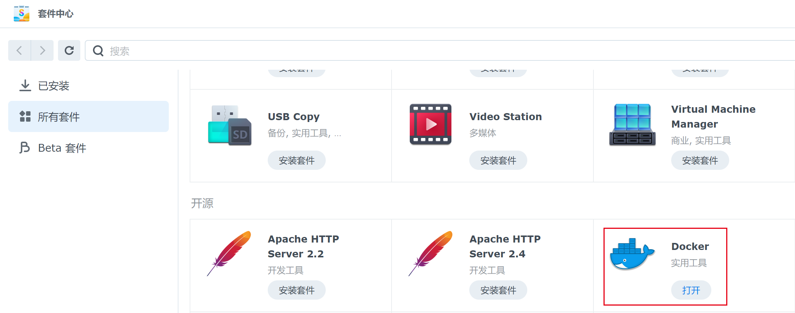1.2、打开docker在注册表里搜索“vaultwarden”双击下载镜像
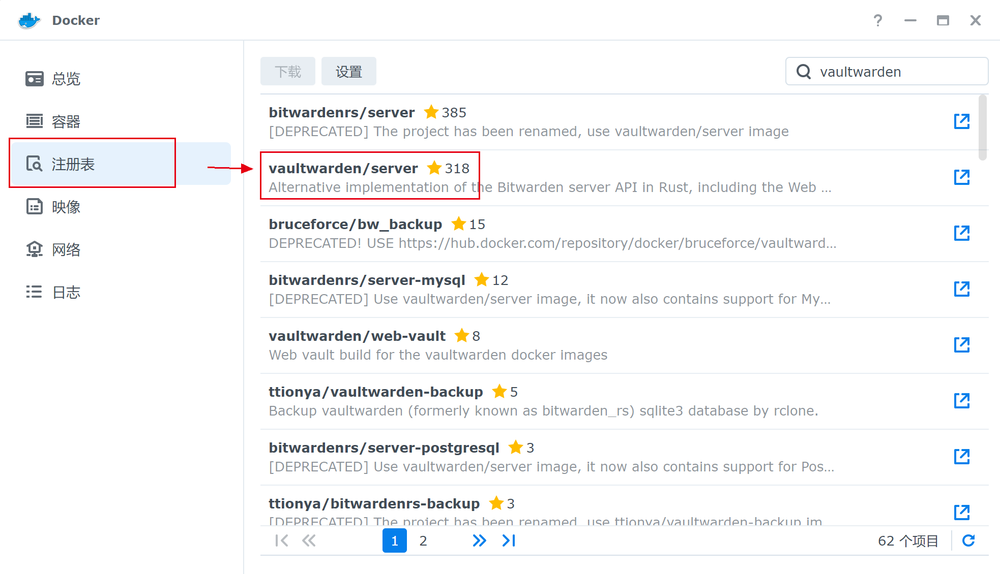1.3、在File Station里docker文件夹里新建文件夹bitwarden，然后在bitwarden文件夹里新建文件夹data
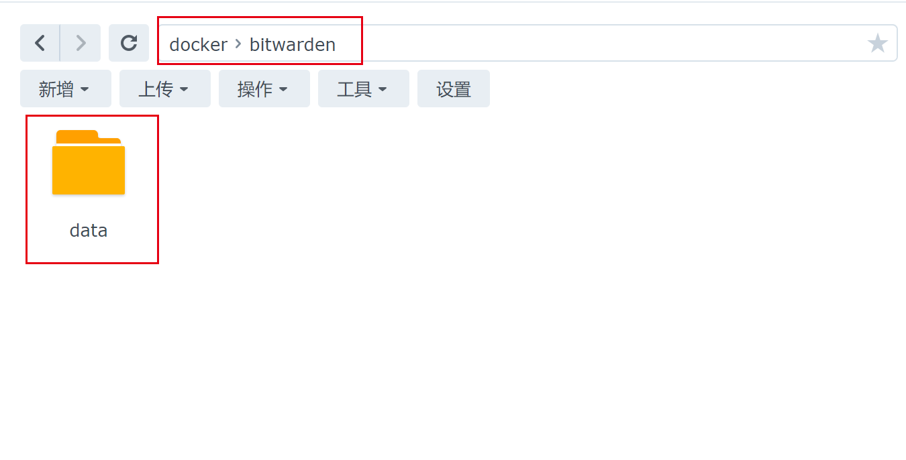1.4、在docker-映像里双击下载的vaultwarden镜像开始部署
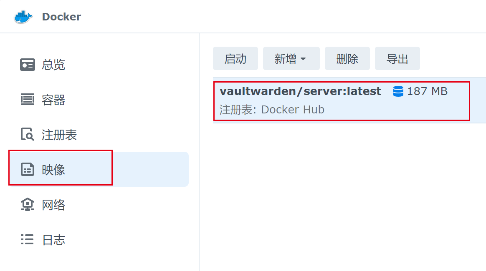1.5、选择高级设置，勾选“启用自动重新启动”。存储空间里添加文件夹选择刚刚新建的data文件夹，装载路径填/data/。端口设置里删除第一个端口，第二个本地端口改成和群晖没有冲突的其他端口。然后点应用，下一步开始部署
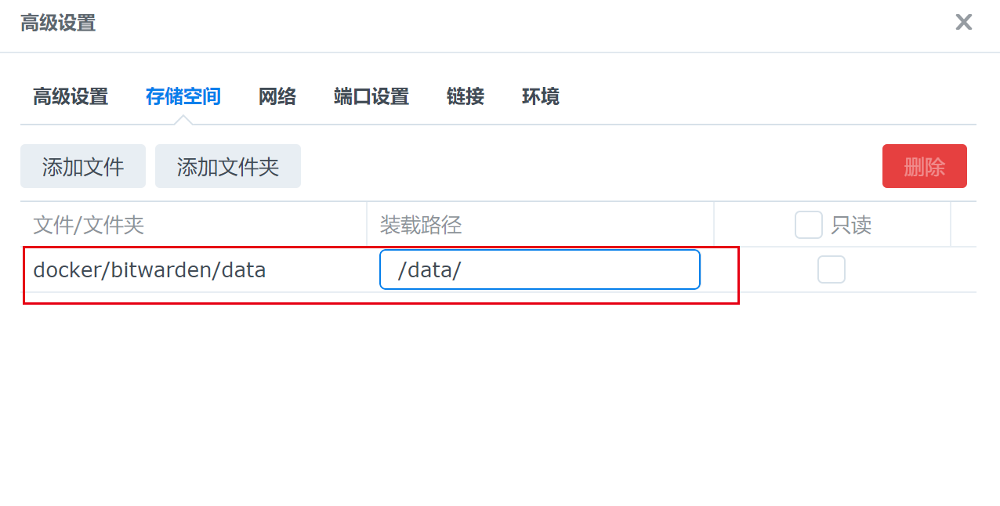 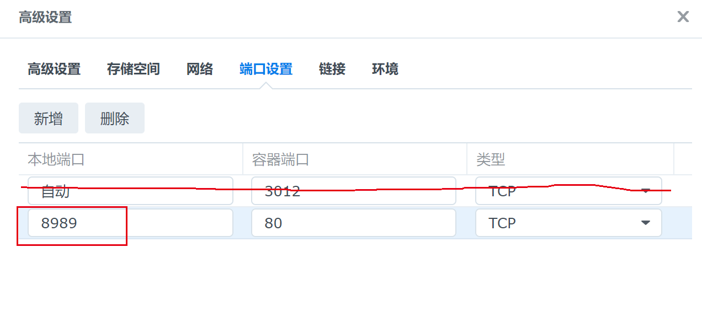1.6、部署完成后，即可在docker容器里看到vaultwarden服务了。用群晖地址加端口号即可打开bitwarden首页，创建管理员账号
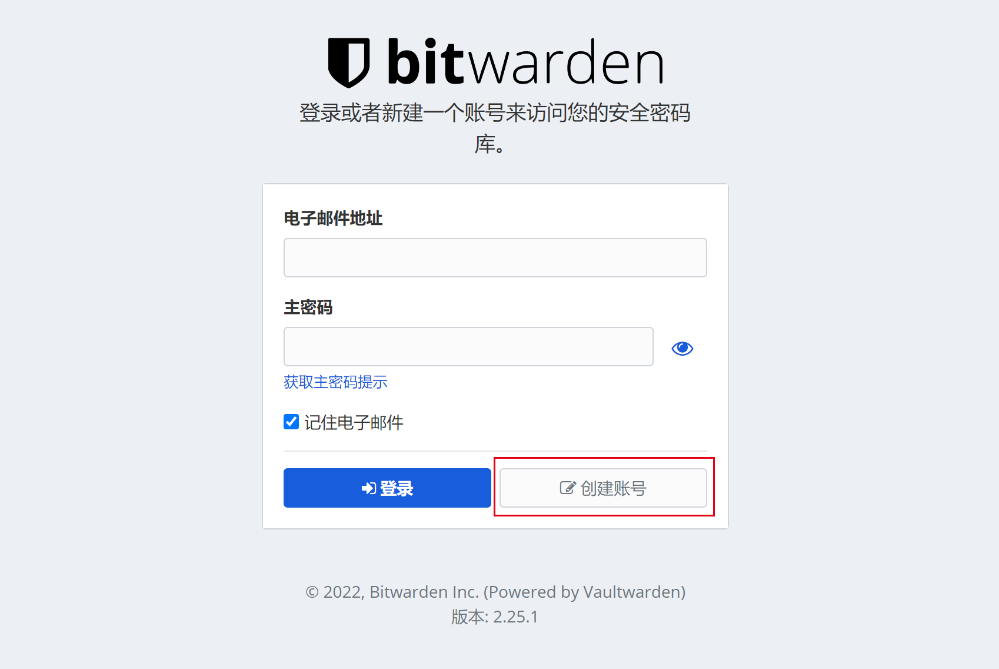1.7、创建完账号，如需禁用新用户注册、禁用邀请、配置邮箱等信息，在doceker容量先停止服务，点编辑–环境里–新增如下参数。更多的配置请参考作者的Wiki：传送门
1 | SIGNUPS_ALLOWED=false |
1.8、问题：创建的账号的时候，点击没有反应。这是因为bitwarden要求必须开启ssl，可以利用群晖的反向代理配置ssl证书
方法：首先需给自己的域名申请一个证书，在群晖控制面板–安全性–证书，添加自己的域名ssl证书，设置成默认证书
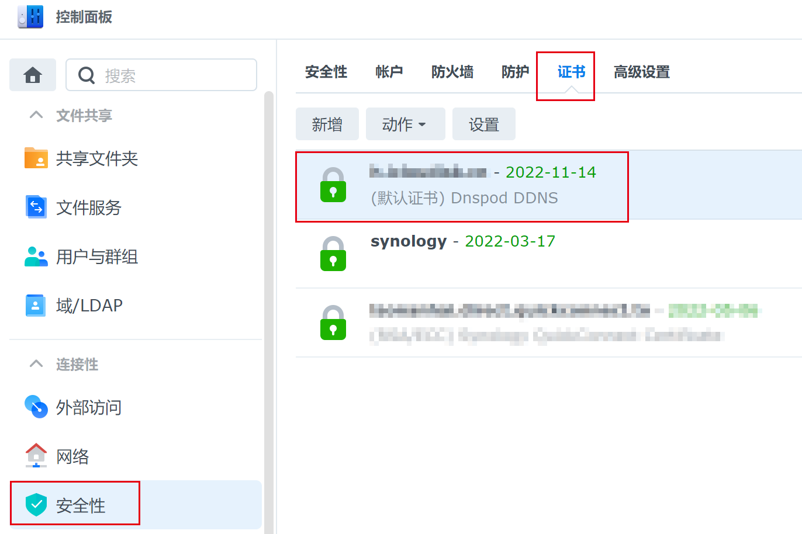在控制面板–登录门户–高级–反向代理服务器，新增反向代理服务器规则。配置如下：
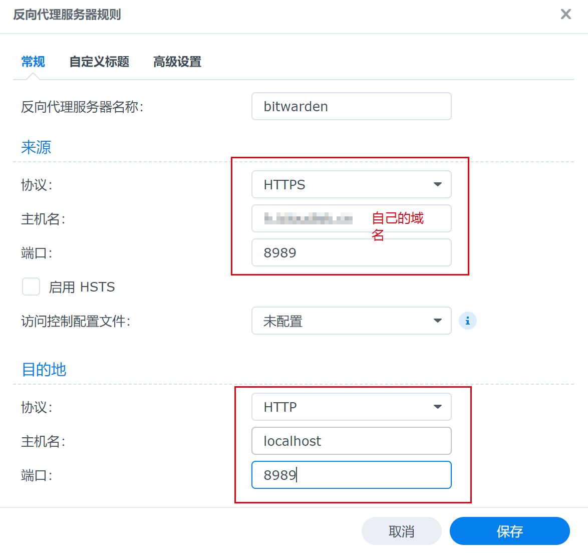至此，群晖部署教程结束
二、宝塔面板docker教程
准备工具：域名一个、服务器一台
域名解析到服务器。宝塔面板的安装方法，这里不再赘述。各个系统的安装方法，请移至官方：传送门。在软件商店里安装nginx和docker
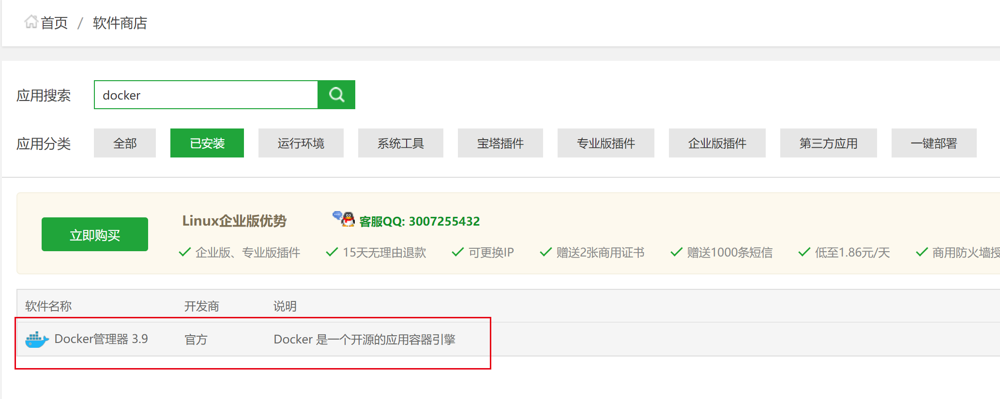点设置打开docker，镜像管理–镜像搜索–搜索vaultwarden–选择第一个就是我们要的镜像–拉取
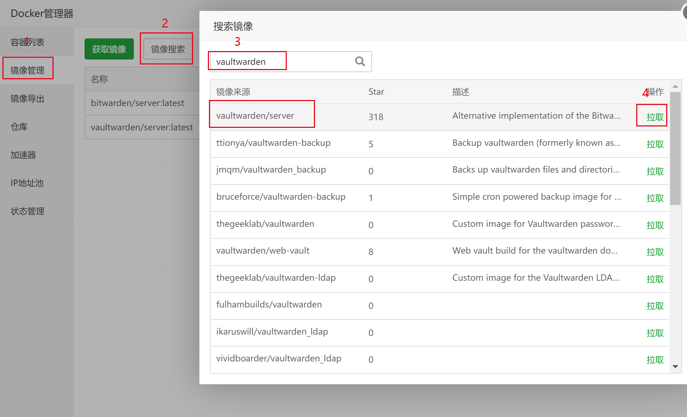宝塔面板网站里添加一个站点，在站点里新建一个data文件夹
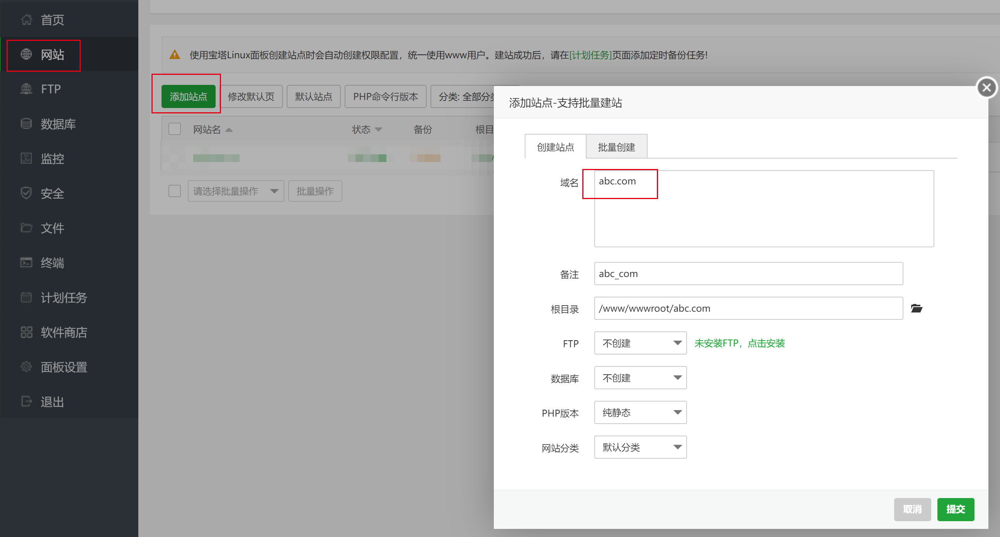 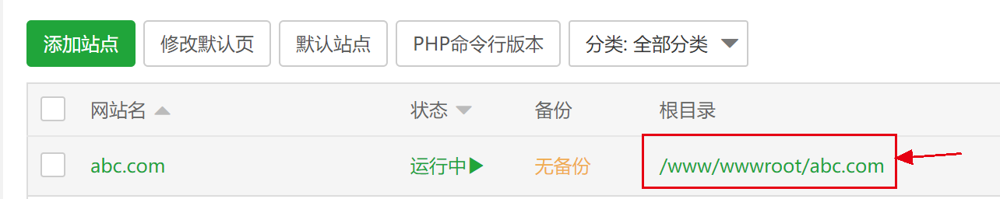 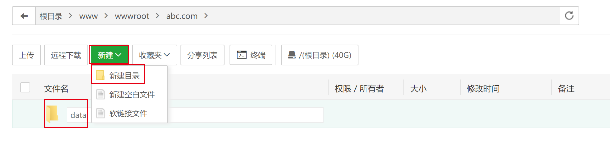docker管理器创建vaultwarden容器，配置端口映射、目录映射、内存配额等如下：
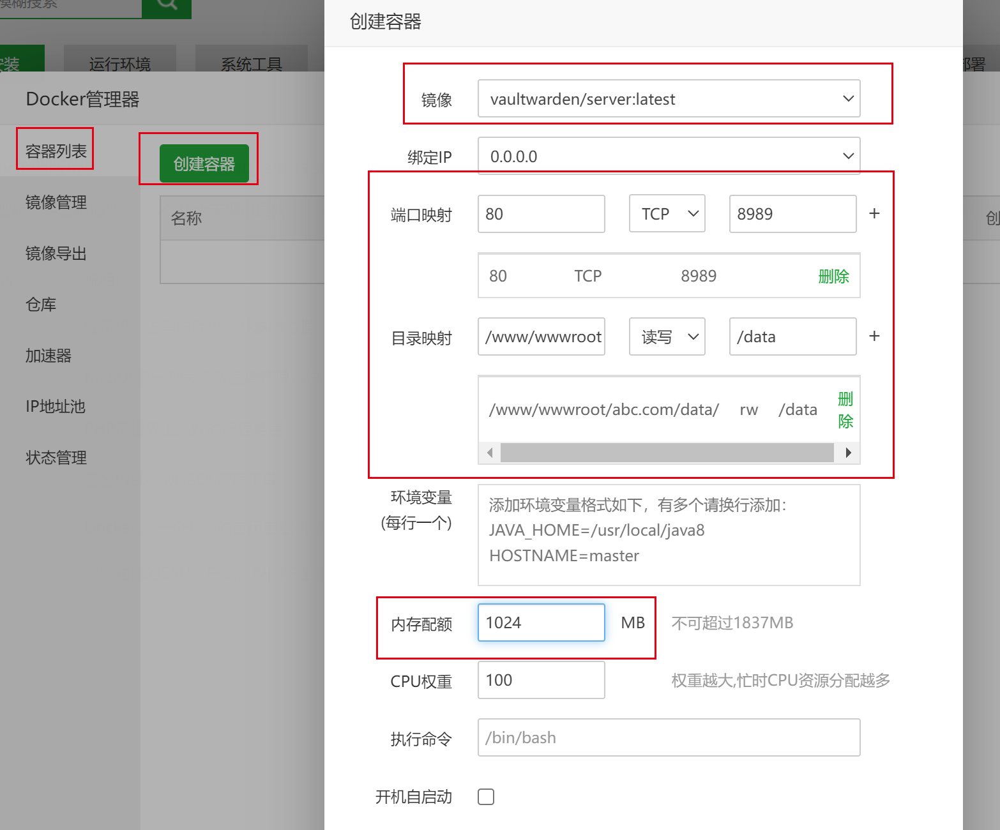在站点设置里配置域名ssl和反向代理
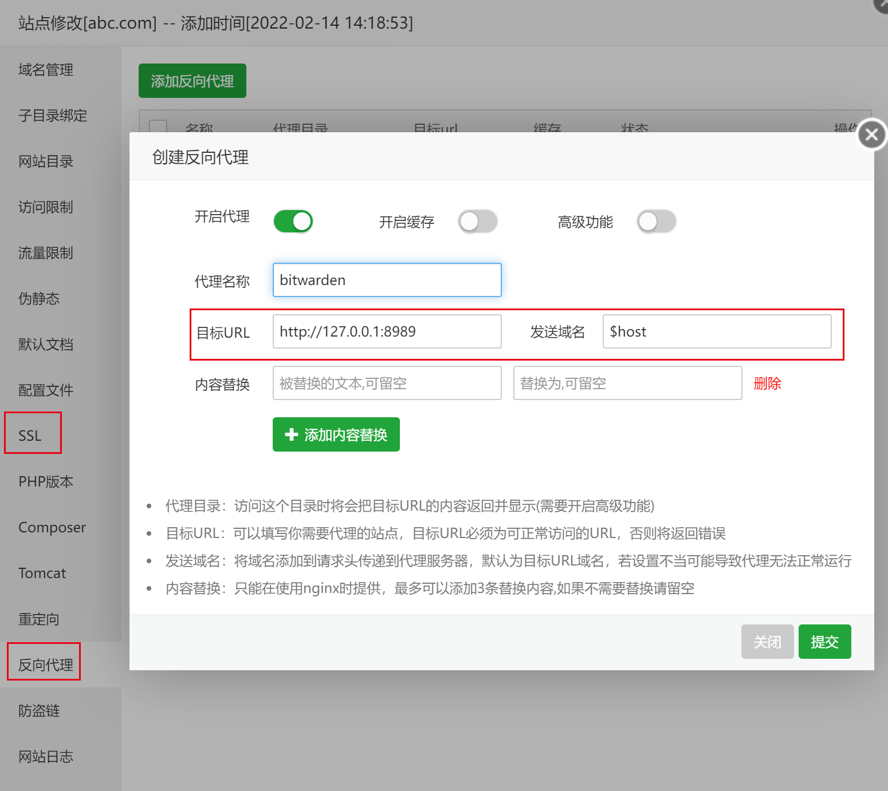打开域名就是bitwarden的首页了，创建管理员账号。这里禁用新用户注册、禁用要求、配置邮箱需要用在终端里用命令操作，如关闭新用户注册，使用下面的命令。使用之前需要在宝塔面板docker管理器中删除掉之前的容器，然后运行以下命令来重新创建容器并开启禁止用户注册的功能。不必担心，因为指定了 volume 映射，你的数据不会被删除。
1 | docker run -d --name bitwarden \ |
其他配置移至作者wiki里查看更多配置命令：传送门
至此宝塔面板docker部署bitwarden教程结束